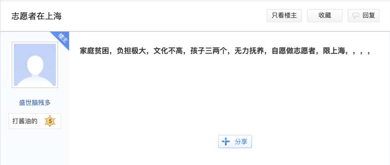

Ying, living in GuangZhou, China, firstly joined the surrogacy industry as an assistant in 2011. Now, she already formed her own surrogacy “team” to assist agencies with taking care of surrogate mothers, who are also called volunteers within the industry. All logistics from accommodation, meals, medical care to purchasing maternity clothes are managed by Ying and her team during the full-term pregnancy of the carriers.
Surrogate is a controversial topic with its legality varying widely around the world. The ambiguous law in China has stimulated this booming industry over the past 10 years. Ying’s team is a part of this huge remunerative underground surrogate industry in China, which is estimated to encompass over 400 agencies.
How legal loopholes help market growth?
In 2015, the Amendment to the Population and Family Planning Law of the People's Republic of China was enacted. The draft> initially proposed to forbid any format of surrogacy. But the law that finally got passed never mentioned about illegalising surrogacies, leaving surrogacy in an unregulated grey area, neither explicitly prohibited nor supported.
The only law that can be referred to is the Administrative Measures for Assisted Human Reproductive Technology. According to Article 3, the application of human assisted reproductive technology shall be carried out in medical institutions for the purpose of medical treatment and shall comply with the national family planning policy, ethical principles and relevant legal provisions. The sale of gametes, zygotes and embryos in any format is prohibited. Medical institutions and medical personnel must not implement any format of surrogacy technology.
A judge who wished to remain anonymous said that the main purpose to remove this regulation could be to leave more room for couples who are incapable of having a child. According to the China Population Association, the infertility rate of China has increased by 10% from 2009 to 2019.
“Altruistic surrogacy, where a surrogate carries a child with no additional base compensation, is acceptable. But if a signed contract and unreasonable money or benefit exchange are involved in the process, it will be defined as illegal commercial surrogacy,” she explained.
And such illegality could bring about the invalidity of the contract.
Why are contracts invalid?
According to Article 52 of the Contract Law of the People's Republic of China, a contract shall be null and void under any of the following circumstances:
-
(1) a contract is concluded through the use of fraud or coercion by one party to
damage
the interests of the State;
-
(2) malicious collusion is conducted to damage the interests of the State, a
collective or a third party;
-
(3) an illegitimate purpose is concealed under the guise of legitimate acts;
-
(4) damaging the public interests;
-
(5) violating the compulsory provisions of laws and administrative regulations.
There is no direct law stating that all surrogacy agreements are void. The judge also pointed out one of the exceptions where the surrogacy cases are related to sex selection. If this is the case, it is a clear violation of the family planning law.
An agency called New Life Global Network provides their sample contract between agency and intended parents on their website and refused our inquiry of interview. According to Chenggang Ji, a lawyer from Beijing, the contract is in accordance with Cambodian legislation and cannot be explained by Chinese laws. He confirmed that if a contract is stated as void, both parties are not protected by law.
“The contracts between agency and surrogates are legally invalid, which is known by all the agencies,” admitted by Ying. However, people in the industry still sign contracts to make the surrogates feel partly in control of the deal.
Knowing the invalidity, Ying seldom signed contracts with surrogates. Her usual practice was to conclude the business with a gentleman’s oral agreement. But it did not go well. She learned her lesson when surrogate mothers asked for a higher price when they got pregnant. Therefore, she decided to make formal contracts in the future to take back control.
Ethical dilemmas posed by surrogacy
Another aspect that should be taken into consideration in lawsuit prosecution is public order or good morals, which has been applied in settling multiple lawsuits regarding dispute over surrogacy contracts. Ethical dilemmas to surrogate parenthood have posed challenges to humanity.
According to Ji, there are three types of surrogacy. First, parents transfer their own fertilized eggs to the surrogate mother for implantation. In this case, the surrogate mother is a complete "surrogacy", and the child has no genetic relationship with the surrogate mother. Second, the father uses artificial way (not sexual intercourse) to inject semen into the surrogate mother. In this case, the child has a genetic relationship with the surrogate mother, which is recognized by Chinese law as a mother-child relationship. Third, through sexual intercourse, the father makes the surrogate mother pregnant and give birth. From Ji’s opinion, surrogacy agreements based on second and third way should be void.
Ji acknowledged that there are blanks in the legislation dealing with surrogacy related disputes, but these legal blanks are very common in China, or in other countries. The Council on General Affairs and Policy of the Hague Conference are currently working on a project> to reach a global agreement but it’s difficult to have actual power over surrogacy because of countries’ wide differences.
From 2005 to 2019, 240 surrogacy relevant lawsuits were documented regarding validity of surrogacy contract, parenthood of the surrogate child, sole care and control of the surrogate child.
How can agencies keep surrogates without a valid contract?
A contract having no legal power protects neither of the two parties. Surrogate mothers can be cheated by the agencies and fail to get their promised payment or medical treatments. The agencies have no legal rights to intervene when surrogates decide to terminate the pregnancy and go back home. However, they have come up with other methods to restrict surrogates.
For instance, in order to ensure all the surrogate mothers to complete the entire process, their ID card will be confiscated by Ying. They will not be able to purchase train tickets or airline tickets back home without their ID.
Apart from that, paying in installments is a typical way in the industry to prevent surrogates from regretting their decisions and running away without giving birth. According to Shanghai Xibei, the payment will be made in a mix of various forms, such as monthly base pay, compensation, medical compensation. A base salary of 2,000 yuan will be paid in monthly installments after the fertilized egg is successfully implanted. There will be an additional monthly 10,000 yuan compensation starting from the third month of pregnancy. The amount will increase to 15,000 yuan from the sixth month of pregnancy and the rest unpaid compensation will be settled after intended parents successfully pick up the baby from the hospital.
Most surrogate mothers won’t risk the loss of money to escape though. One of the surrogate agencies, called Shanghai Xibei, offers 10,000 yuan for egg donors, but up to 180,000 yuan for surrogates. Last year, the annual per capita income of rural households in China was only 15,000 yuan. This considerable payment attracts women from less-developed provinces to go to major cities to bear children for others.
And she said it’s low season of the industry now, starting from October, as many surrogate mothers are preparing to return home to spend the Chinese New Year with their own families. But the peak season is soon to come, after the New Year, more babies and business are yet to come.
Even though many surrogate agencies promotes that they provide well-educated carriers graduated from university, most of the carriers that Ying has encountered are middle-aged women from rural China. “Only rarely do university students suspend their studies to earn money this way,” Ying said. “Most young students choose to donate their eggs instead of being a carrier, and only those badly in need of money opt for surrogacy.”
As Ying said, volunteers are mostly middle-aged women from rural China. The pic shows someone posted on the baidu IVF forum volunteering to be a carrier due to poor family condition and multiple kids to raise.
How do agencies work in the industry?
Surrogacy agencies are highly profitable and charge approximately 400-800k RMB for the service.
The agencies normally will rent an apartment to accommodate surrogates in these major cities. They also have designated partner “medical laboratory” for surrogates to do the medical check-ups, which are usually completed by medical personnel who have left their previous jobs in medical institutions.
However, some people in the industry told reporters from Xinhua News Agency that although the donors received a compensation fee, there were actually huge hidden dangers. The egg retrieval operation in regular hospitals requires high environmental requirements, and must be sterile and constant temperature. Most underground surrogates often seek out black clinics to retrieve eggs.
Due to lack of supervision, there are risks such as incomplete disinfection, repeated use of equipment, and irregular operations. If the egg is taken out of the follicle, it is necessary to pierce the ovary, leaving a wound on the ovary. If the indoor bacteria exceed the standard, a genital tract infection may occur and cause pelvic inflammatory disease, which will affect future fertility. Infectious diseases such as AIDS may even be life threatening due to infection.
Who’s in charge of the unsupervised agencies?
In 2015, two couples sued Fu Xiaoxia, a former employee of Shanghai HuDa Investment Management Company with contract fraud as she charged tens of thousands as surrogacy service fee and surrogate mother compensation using fake pregnancy test reports and concealed the fact of her quitting job in 2011. Fu later was sentenced to three and a half years in prison with a fine of 10000 yuan. However, HuDa Investment Company was not punished and even survived till liquidation in 2018, though proved to be a surrogacy agency with concrete evidence during investigation.
Looking into the profile of HuDa’s owner, Xu Hua, two more medical companies were established and managed by him, named both Qi Jian Medical Technology Company but located perspectively in Fujian and Shanghai. The companies are licensed for technology development and consultation but turn out to be a surrogate agency named Kun He as shown on its official website.
Though the equivocalness in law allows the existence of agencies in the format of sham companies like Qi Jian ,still no legal protection can be promised for the contract due to the illegality of surrogacy business.
Ying tries to destigmatize surrogacy. Having spent around 8 years in the industry. She said she built a great friendship with surrogate mothers. Even though they hold surrogates’ ID cards, it is not detaining. “Unlike what most people think, there are no abuse or unfair treatments to surrogate mothers. This serves the common interest of both intended parents and surrogate mother.”